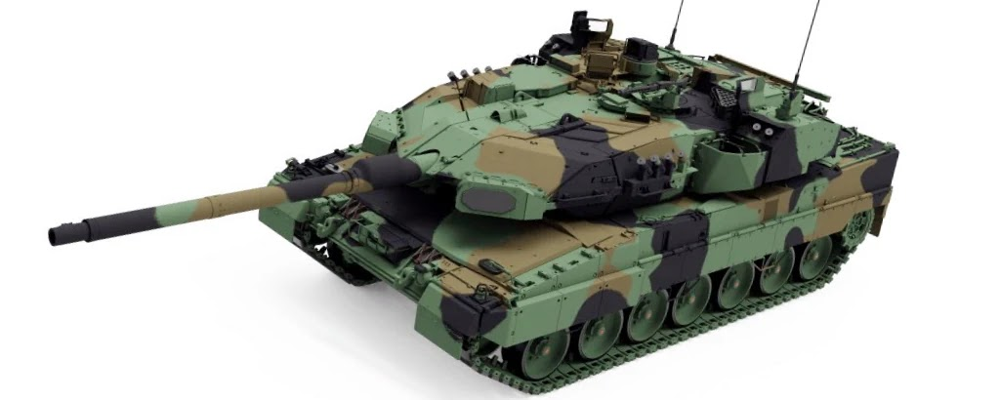

Best Main Battle Tanks in the World
This article is based on the combined score of protection, firepower, accuracy and mobility. None of the tanks listed here have seen combat against each other during military operations yet. And even though some things, such as armor composition, are kept in high secrecy, we know a lot about these machines. Data on their protection, firing range, accuracy, capabilities of their fire control systems, and so on are widely available. So we know capabilities of each of these tanks. This analysis is based on specifications and available data.
All of the tanks mentioned here are incredibly powerful and devastating. However crew training of the tank is also an important factor, as performance of the actual tank depends from the crew performance.
This list do not contains tanks that are currently under development, at the prototype stage or tanks that never reach production. The only exception here is the Russian Armata which was produced in small numbers for testing and evaluation, but is not yet produced in quantity.

The German Leopard 2 is a proven and successful German main battle tank tank. It was introduced back in 1979 and was constantly upgraded ever since. During numerous international tank challenge competitions the Leopard 2 series tanks outperformed American M1A2 Abrams, British Challenger 2, French Leclerc and other tanks in terms of overall performance. The Leopard 2A7A1 is the latest operational version. German army ordered a small batch of these tanks. Deliveries began in 2021.
The Leopard 2A7A1 is well protected against conventional and urban warfare threats. It has a welded steel armor construction with Composite armor at the front arc. The tank is additionally fitted with Passive composite armor with the latest generation of passive armor. It seems that it uses new materials, including Nano-Ceramics and allows made of titanium and steel. Damaged armor modules can be easily replaced in field conditions.
This tank is equipped with Israeli Trophy active protection system, which destroys incoming anti-tank rockets, missiles, and even high-explosive anti-tank rounds. This system also allows to detect enemy location and attack the launch position. The Leopard 2A7A1 also offers high level of protection against landmines and improvised explosive devices.
This tank is equipped with a 120 mm/L55 smoothbore gun. It is loaded manually and is compatible with all standard NATO 120 mm tank ammunition. Leopard 2A7A1 is equipped with advanced sights with thermal imagers of new generation. There is a sophisticated fire control system, which is capable of automatic target detection and tracking. This tank has longer firing range than many other tanks. Furthermore it can use newly-developed DM11 programmable ammunition that can engage targets behind cover and within buildings, and can even shot down helicopters.
This tank is operated by a crew of 4, including commander, gunner, loader and driver. This MBT is powered by a proven multi-fuel diesel engine, developing 1 500 hp.

Currently the Black Panther is one of the most advanced main battle tank in the world, outclassing anything North Korea or China have. Furthermore it is the most expensive main battle tank to date. Deliveries of the K2 Black Panther tank commenced to the South Korean Army in 2016. As of 2017 at least 100 tanks were delivered.
This tank uses composite armor of undisclosed type and explosive reactive armor modules. It is claimed that front armor withstands direct hits from 120 mm tank rounds, fired from L55 guns. Its protection level is broadly similar to that of the American M1A2 Abrams, considering that the K2 is much lighter. The Black Panther tank is also completed with an active protection system and countermeasures system. These further increase tank's survivability on the battlefield.
This new South Korean tank is armed with the German 120 mm/L55 tank gun, similar to that used on the German Leopard 2A6, 2A7. This gun is more accurate at long ranges than the previous 120 mm smoothbore tank guns. The K2 has a very advanced fire control system with can spot, track and fire automatically at visible vehicle-size targets, and even low-flying helicopters, without needing any input from a human operator. The K2 also uses advanced munitions.
The Black Panther is fitted with a powerful diesel engine. It is fast and has a state-of-the-art hydropneumatic suspension.

The M1A2 Abrams offers significant protection against all well-known anti-tank weapons. This main battle tank uses advanced armor, reinforced with depleted uranium layers.
Its firepower and accuracy are slightly inferior to that of the German Leopard 2 or the South Korean K2 Black Panther due to a shorter 120 mm/L44 smoothbore gun. Yet this tank still packs a formidable punch.
Its complex gas turbine engine offers good performance, and has a number of advantages of its own. Though requires tremendous amount of maintenance, logistical support and is thirsty on fuel.
A number of older M1, M1A1 and M1A2 tanks were upgraded to this standard. The tank can be also fitted with a Tank Urban Survival Kit (TUSK), that improves survivability in urban environment. To date very few Abrams tanks have been ever destroyed in combat.